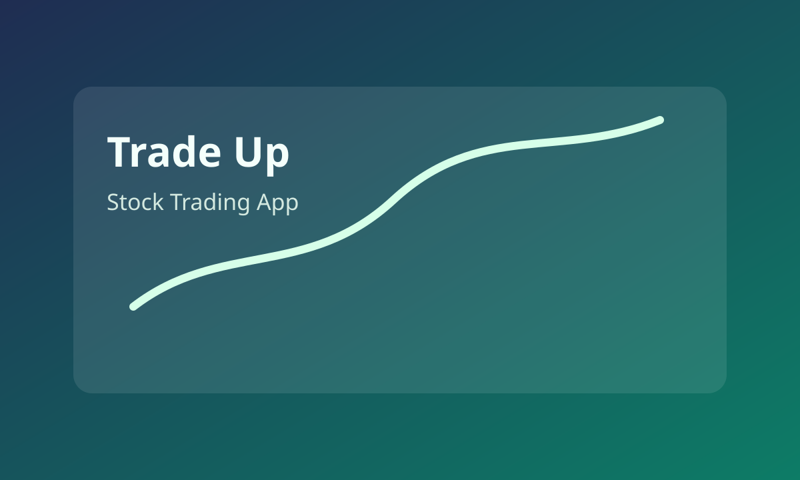
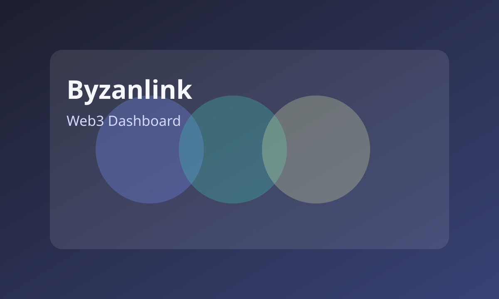
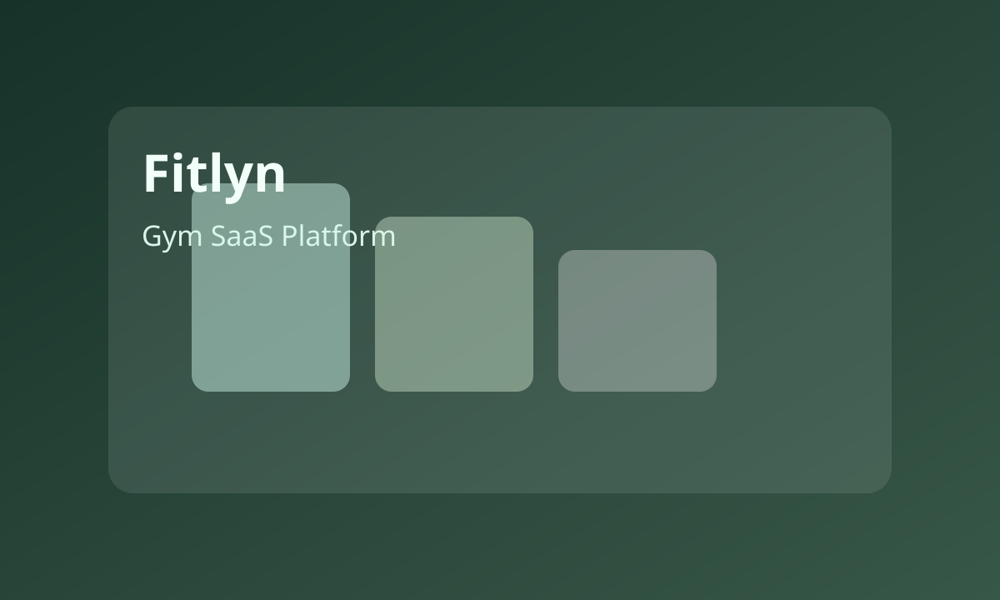
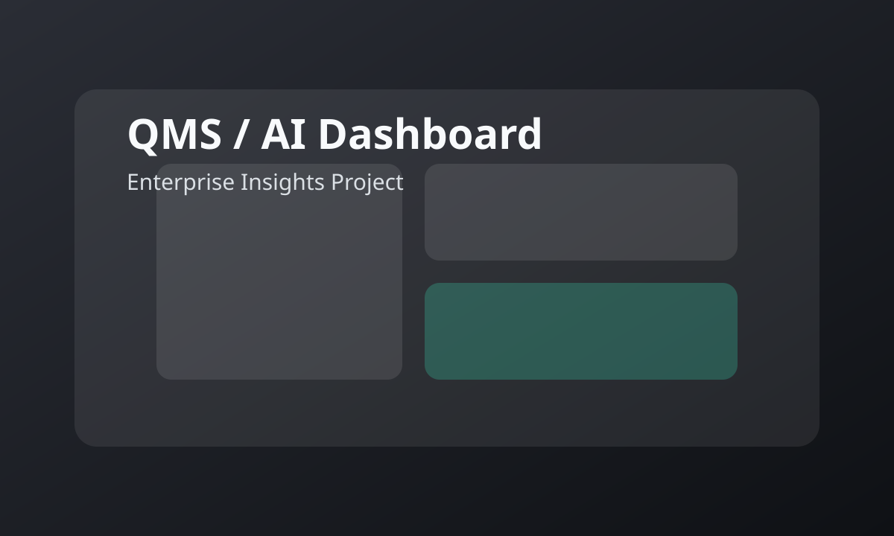

Wave 2 - Stock Trading App
Led UX for Wave 2, a mobile stock trading app, with seamless trading workflows for onboarding, portfolio tracking, and order clarity.
Read Case StudyBased in Bhubaneswar, India
UI/UX Design Manager with 11+ years of experience leading design initiatives across enterprise SaaS, fintech, gaming, and digital platforms.
Years of Design Experience
Wave 2 App Downloads
Play Store Rating (Wave 2)
Featured Work
Selected projects based on resume highlights across fintech, enterprise SaaS, dashboard ecosystems, and conversion-focused flows.

Led UX for Wave 2, a mobile stock trading app, with seamless trading workflows for onboarding, portfolio tracking, and order clarity.
Read Case Study
Owned UX across enterprise platforms in banking, insurance, and logistics with user research, journey mapping, and scalable workflow design.
Read Case Study
Spearheaded UX strategy for Farm2Plate, a B2B SaaS platform, and designed admin tools and dashboards for operational visibility.
Read Case Study
Led UX across casino systems (Random Riches, UMS, M5, MA) and created high fidelity prototypes for complex real-time workflows.
Read Case StudyWhat I Do
I help teams translate complex business requirements into intuitive, scalable product experiences through UX strategy, research, and design systems thinking.
Where I've Worked
Jun 2025 - Mar 2026
Led UX for Wave 2 mobile stock trading app, contributing to 1M+ downloads and a 4.2 rating through clear trading workflows.
Jul 2023 - Apr 2025
Spearheaded UX strategy for Farm2Plate (B2B SaaS), designed dashboards/admin tools, and collaborated in SAFe Agile teams.
Dec 2019 - Jul 2023
Owned UX across banking, insurance, and logistics platforms; led research, journey mapping, dashboard UX, and design system practices.
Nov 2018 - Dec 2019
Designed ecommerce product discovery and checkout flows, improving engagement and conversion outcomes for global clients.
May 2016 - Nov 2018
Led UX for casino systems (Random Riches, UMS, M5, MA), created high-fidelity prototypes, and aligned global stakeholders.
Mar 2014 - Apr 2016
Supported frontend UX implementation using HTML, CSS, and JavaScript on enterprise projects.
Social Proof
"Led UX for Wave 2 mobile stock trading app, resulting in over 1M+ downloads and a 4.2 rating."
IGT | Resume Highlight
"Owned UX across enterprise platforms in banking, insurance, and logistics with user research, journey mapping, and dashboard design delivery."
Birlasoft | Resume Highlight
"Spearheaded UX strategy for Farm2Plate B2B SaaS, designed dashboards/admin tools, and delivered accessible responsive designs in SAFe Agile."
Paramount Software Solutions | Resume Highlight
Credentials
Resume Access
Lead UI/UX Designer profile with 11+ years of experience in enterprise SaaS, fintech, gaming, and scalable product design.
Open to lead UI/UX roles, consulting, and product design partnerships for SaaS and digital platform teams.
+91 8879795095 | pradhan.apramit@gmail.com | apramit.in